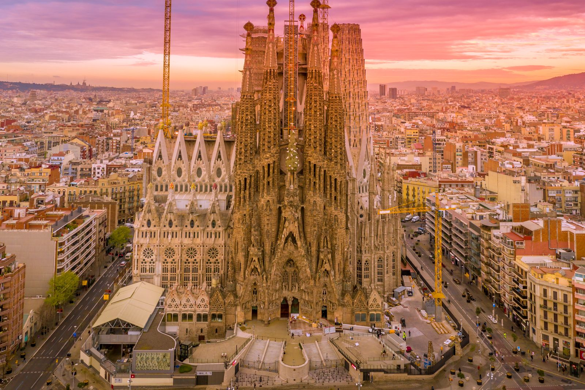

Elige desde dónde sales y la actividad que quieres. Nosotros nos encargamos de la reserva, la recogida y los traslados.Choose where you are staying and the activity you want. We take care of the booking, pick-up and transfers.
89 experiencias · pulsa para ver más · + para añadir89 experiences · tap for details · + to addLa capital: Ciudad Colonial, cultura y excursiones a todo el país.The capital: the Colonial City, culture and day trips across the country.
En Santo DomingoIn Santo Domingo
5 actividadesactivities-
Las calles empedradas de la primera ciudad europea de América, las lagunas subterráneas de Los Tres Ojos y el monumental Faro a Colón en un mismo día.The cobbled streets of the first European city in the Americas, the underground lagoons of Los Tres Ojos and the monumental Columbus Lighthouse in one day.
-
Un recorrido cómodo y tranquilo por los monumentos de la Zona Colonial, Patrimonio de la Humanidad, sin tener que caminar.An easy, relaxed ride past the landmarks of the Colonial Zone, a World Heritage Site, without the walking.
-
Recorre las plazas, iglesias y rincones de la Zona Colonial en tuk tuk, con paradas para hacer fotos.See the squares, churches and corners of the Colonial Zone by tuk tuk, with stops for photos.
-
Paseo por la Zona Colonial y visita a KahKow, donde conocerás el cacao dominicano y prepararás tu propio chocolate.A walk around the Colonial Zone and a visit to KahKow, where you discover Dominican cocoa and make your own chocolate.
-
Paseo a caballo por el campo a poca distancia de la capital, a ritmo tranquilo y apto para principiantes.A horseback ride through the countryside close to the capital, at an easy pace and suitable for beginners.
Ocio nocturnoNightlife
4 actividadesactivities-
Una noche por los bares, terrazas y coctelerías con más ambiente de la Zona Colonial.A night out at the liveliest bars, terraces and cocktail spots in the Colonial Zone.
-
Reserva de mesa o zona VIP en las discotecas con mejor ambiente, con acceso sin colas.Table or VIP area bookings at the best clubs, with queue-free entry.
-
Música dominicana en directo para bailar bachata y merengue como un local.Live Dominican music to dance bachata and merengue like a local.
-
Una noche en los casinos de los grandes hoteles, con cena o espectáculo si lo deseas.A night at the casinos of the big hotels, with dinner or a show if you like.
Islas y excursiones marítimasIslands & sea trips
5 excursionesday trips-
La excursión estrella del país: playas de arena blanca, agua turquesa y la piscina natural con estrellas de mar, dentro del Parque Nacional del Este.The country's signature trip: white-sand beaches, turquoise water and the natural pool with starfish, inside the East National Park.
-
Versión más exclusiva de Saona, con más tiempo en la isla y paradas en tres playas distintas.A more exclusive version of Saona, with more time on the island and stops at three different beaches.
-
Isla pequeña y tranquila frente a La Romana, con arrecifes ideales para hacer snorkel entre peces de colores.A small, quiet island off La Romana, with reefs perfect for snorkelling among colourful fish.
-
Día completo en la península de Samaná: los manglares y cuevas de Los Haitises y la playa de Cayo Levantado.A full day on the Samaná peninsula: the mangroves and caves of Los Haitises and the beach at Cayo Levantado.
-
Observa las ballenas jorobadas en la bahía de Samaná y termina el día en la playa de Cayo Levantado. Temporada de enero a marzo.Watch humpback whales in Samaná Bay and end the day on the beach at Cayo Levantado. Season: January to March.
Samaná y naturalezaSamaná & nature
4 excursionesday trips-
Dos playas salvajes de la península de Samaná, a las que solo se llega en barco o a pie.Two wild beaches on the Samaná peninsula, reachable only by boat or on foot.
-
La cascada de El Limón, en plena selva, y la tarde en Playa Bonita, en Las Terrenas.El Limón waterfall in the middle of the jungle, and the afternoon at Playa Bonita in Las Terrenas.
-
Subida a la cascada de El Limón y tiempo de playa en Cayo Levantado.A trip up to El Limón waterfall and beach time on Cayo Levantado.
-
Tirolinas sobre la selva de Samaná y después baño en Playa El Valle, una de las más vírgenes de la zona.Ziplines over the Samaná jungle, then a swim at Playa El Valle, one of the most unspoilt beaches in the area.
Aventura y naturalezaAdventure & nature
6 excursionesday trips-
Senderismo hasta un río de aguas azul turquesa en las montañas de Jamao al Norte, con baño en sus pozas.A hike to a turquoise river in the mountains of Jamao al Norte, with a swim in its pools.
-
Aventura río arriba por las cascadas de Damajagua, con saltos y toboganes naturales. Con guía y equipo.An upriver adventure through the Damajagua waterfalls, with jumps and natural slides. Guide and gear included.
-
Ruta en cuatrimoto por caminos de tierra, ríos y paisaje rural en la zona de Comatillo.An ATV route along dirt tracks, rivers and countryside in the Comatillo area.
-
Cuatrimoto por el campo dominicano hasta la playa de Macao y un cenote para bañarse.ATV ride through the Dominican countryside to Macao beach and a cenote for a swim.
-
Un día de aventura combinada: tirolinas, cuatrimoto, paseo a caballo y safari por el campo.A day of combined adventure: ziplines, ATV, horseback riding and a countryside safari.
-
Excursión a las montañas de Jarabacoa, a los pies del Pico Duarte, el más alto del Caribe: ríos, cascadas y clima fresco.A trip to the mountains of Jarabacoa, at the foot of Pico Duarte, the highest peak in the Caribbean: rivers, waterfalls and cool air.
Cultura y gastronomíaCulture & food
6 excursionesday trips-
Visita a la casa del ron Barceló para conocer cómo se elabora, con degustación al final.A visit to the home of Barceló rum to see how it is made, with a tasting at the end.
-
Recorrido por una finca de cacao en Hato Mayor, del árbol a la tableta, preparando tu propio chocolate.A tour of a cocoa farm in Hato Mayor, from tree to bar, making your own chocolate.
-
Pueblo de estilo mediterráneo del siglo XVI sobre el río Chavón, con anfiteatro, galerías y vistas espectaculares.A 16th-century Mediterranean-style village above the Chavón river, with an amphitheatre, galleries and stunning views.
-
Altos de Chavón y la Cueva de las Maravillas, con pinturas rupestres taínas.Altos de Chavón and the Cave of Wonders, with Taíno rock art.
-
Visita a los viñedos de OcoaBay, en las montañas de San José de Ocoa, con cata de sus vinos.A visit to the OcoaBay vineyards in the mountains of San José de Ocoa, with a tasting of their wines.
-
Las dunas de Baní frente al mar Caribe y las salinas tradicionales de la zona.The Baní sand dunes by the Caribbean Sea and the traditional salt flats nearby.
Ballenas, parques naturales y playas de postal en el noreste.Whales, national parks and postcard beaches in the northeast.
En SamanáIn Samaná
18 actividadesactivities-
Manglares, islotes cubiertos de vegetación, aves y cuevas con arte taíno, recorridos en barco.Mangroves, jungle-covered islets, birdlife and caves with Taíno art, explored by boat.
-
Navegación tranquila entre los canales de manglar de Los Haitises, observando aves.A calm boat ride through the mangrove channels of Los Haitises, spotting birds.
-
Visita a las cuevas del parque, como la de San Gabriel o la de la Línea, con pictografías taínas.A visit to the park's caves, such as San Gabriel or La Línea, with Taíno pictographs.
-
Islita de arena blanca en la bahía de Samaná, perfecta para un día de playa.A white-sand islet in Samaná Bay, perfect for a beach day.
-
Una de las cascadas más bonitas del país, en plena selva, con poza para bañarse.One of the country's most beautiful waterfalls, deep in the jungle, with a pool for a swim.
-
Subida a caballo por la selva hasta la cascada de El Limón.A horseback ride through the jungle up to El Limón waterfall.
-
Considerada una de las mejores playas del Caribe: kilómetros de arena y cocoteros.Rated among the best beaches in the Caribbean: miles of sand and coconut palms.
-
Las calas y playas de Las Galeras, en el extremo de la península, tranquilas y de agua cristalina.The coves and beaches of Las Galeras, at the tip of the peninsula, quiet and crystal clear.
-
Playa salvaje bajo un acantilado, ideal para hacer snorkel. Se llega en barco o a pie.A wild beach beneath a cliff, ideal for snorkelling. Reached by boat or on foot.
-
Pequeña cala escondida entre rocas y vegetación, de las más íntimas de Samaná.A small cove hidden among rocks and greenery, one of the most secluded in Samaná.
-
Playa virgen rodeada de montañas verdes, con mucho encanto y poca gente.An unspoilt beach surrounded by green mountains, charming and uncrowded.
-
Cascada rodeada de vegetación en la península de Samaná, con agua fresca para bañarse.A waterfall surrounded by greenery on the Samaná peninsula, with cool water for a swim.
-
Recorrido de tirolinas sobre la selva del valle, con vistas a la costa.A zipline circuit over the valley's jungle, with views of the coast.
-
Cada invierno miles de ballenas jorobadas llegan a la bahía de Samaná. Temporada de enero a marzo.Every winter thousands of humpback whales come to Samaná Bay. Season: January to March.
-
Avistamiento de ballenas por la mañana y playa en Cayo Levantado. Temporada de enero a marzo.Whale watching in the morning and beach time on Cayo Levantado. Season: January to March.
-
Los manglares y cuevas de Los Haitises y, después, playa en Cayo Levantado.The mangroves and caves of Los Haitises, followed by beach time on Cayo Levantado.
-
Navegación por la bahía de Samaná, con sus cayos, costa verde y aguas tranquilas.A cruise around Samaná Bay, with its cays, green coastline and calm water.
-
Barco solo para vosotros, con la ruta y las paradas que prefiráis.A boat just for you, with the route and stops you prefer.
Acuáticas y aventuraWater & adventure
6 actividadesactivities-
Salida en barco a los mejores puntos de arrecife para nadar entre peces tropicales. Equipo incluido.A boat trip to the best reef spots to swim among tropical fish. Gear included.
-
Navegación en catamarán con música, bebidas y parada para bañarse.A catamaran cruise with music, drinks and a stop for a swim.
-
Paseo en kayak por aguas tranquilas, manglares o la costa.Kayaking on calm water, through mangroves or along the coast.
-
Inmersiones con centro de buceo para principiantes (bautismo) o buceadores con titulación.Dives with a dive centre, for beginners (try-dive) or certified divers.
-
Salida de pesca en alta mar en barco equipado, con tripulación experta.A deep-sea fishing trip on an equipped boat with an expert crew.
-
Llegamos en barco a calas y playas a las que no se puede ir por carretera.We reach coves and beaches by boat that cannot be reached by road.
Ocio nocturnoNightlife
2 actividadesactivities-
El ambiente nocturno de Las Terrenas: bares y beach clubs a pie de playa.Las Terrenas nightlife: bars and beach clubs right on the sand.
-
Cena y copas en restaurantes y terrazas junto al mar, para alargar la noche con calma.Dinner and drinks at seafront restaurants and terraces, for a relaxed night out.
Playas, mar turquesa y aventura en el este del país.Beaches, turquoise sea and adventure in the east.
En Punta CanaIn Punta Cana
21 actividadesactivities-
Conduce un buggy por caminos de tierra y campo dominicano, con parada en playa y cenote. Se acaba con barro.Drive a buggy along dirt tracks and Dominican countryside, stopping at a beach and a cenote. Expect mud.
-
La versión más potente del buggy, para quienes buscan más velocidad y adrenalina.The more powerful buggy, for those after extra speed and adrenaline.
-
Recorrido en camión por el interior: plantaciones, una casa típica, cacao, café y la vida en el campo.A truck tour of the countryside: plantations, a typical home, cocoa, coffee and rural life.
-
Vuela en paracaídas remolcado por una lancha con vistas a toda la costa de Bávaro.Fly under a parachute towed by a boat, with views over the whole Bávaro coast.
-
Pilota tu propia lancha rápida por la costa y para a hacer snorkel.Drive your own speed boat along the coast and stop to snorkel.
-
Camina por el fondo del mar con un casco especial, sin necesidad de saber bucear.Walk on the seabed wearing a special helmet, no diving experience needed.
-
Encuentro con delfines en un parque marino, acompañado por sus cuidadores.An encounter with dolphins at a marine park, alongside their trainers.
-
Salida en barco a los mejores puntos de arrecife para nadar entre peces tropicales. Equipo incluido.A boat trip to the best reef spots to swim among tropical fish. Gear included.
-
Inmersiones con centro de buceo para principiantes (bautismo) o buceadores con titulación.Dives with a dive centre, for beginners (try-dive) or certified divers.
-
Navegación en catamarán con música, bebidas y parada para bañarse.A catamaran cruise with music, drinks and a stop for a swim.
-
Yate privado por la costa de Bávaro o Cap Cana, con snorkel, piscina natural y bebidas a bordo.A private yacht along the Bávaro or Cap Cana coast, with snorkelling, a natural pool and drinks on board.
-
Barco con música, barra libre y ambiente de fiesta, con parada en piscina natural.A boat with music, open bar and party atmosphere, stopping at a natural pool.
-
Circuito de tirolinas sobre la vegetación tropical, con varias líneas y vistas.A zipline circuit over tropical greenery, with several lines and views.
-
Parque natural en Cap Cana con cenotes, cuevas, tirolinas y el famoso Hoyo Azul.A nature park in Cap Cana with cenotes, caves, ziplines and the famous Hoyo Azul.
-
Cenote de agua turquesa al pie de un acantilado, dentro de Scape Park.A turquoise cenote at the foot of a cliff, inside Scape Park.
-
Reserva donde interactuar con monos ardilla en plena naturaleza, con visita a una plantación.A reserve to interact with squirrel monkeys in nature, plus a plantation visit.
-
Parque de aventura con tirolinas, circuitos y actividades para toda la familia.An adventure park with ziplines, courses and activities for the whole family.
-
Parque de aventura con buggies, caballos, tirolinas y cenote.An adventure park with buggies, horses, ziplines and a cenote.
-
Lagunas de agua dulce entre la vegetación de Puntacana, para pasear y bañarse.Freshwater lagoons in the Puntacana forest, for walking and swimming.
-
Reserva de green fee en los grandes campos de la zona, como Punta Espada, Corales o La Cana.Tee times at the area's great courses, such as Punta Espada, Corales or La Cana.
-
Paseo a caballo por la playa o el campo, para todos los niveles.A horseback ride on the beach or through the countryside, for all levels.
Ocio nocturnoNightlife
4 actividadesactivities-
El espectáculo-discoteca más famoso del Caribe: acrobacias, música en directo y fiesta toda la noche.The Caribbean's most famous show-club: acrobatics, live music and partying all night.
-
Discoteca dentro de una cueva natural, una noche distinta en Punta Cana.A nightclub inside a natural cave, a different kind of night in Punta Cana.
-
Reserva de mesa o zona VIP en las discotecas con mejor ambiente, con acceso sin colas.Table or VIP area bookings at the best clubs, with queue-free entry.
-
Una noche en los casinos de los grandes hoteles, con cena o espectáculo si lo deseas.A night at the casinos of the big hotels, with dinner or a show if you like.
Excursiones desde Punta CanaDay trips from Punta Cana
8 excursionesday trips-
La excursión estrella del país: playas de arena blanca, agua turquesa y la piscina natural con estrellas de mar, dentro del Parque Nacional del Este.The country's signature trip: white-sand beaches, turquoise water and the natural pool with starfish, inside the East National Park.
-
Saona con servicio más exclusivo: grupo reducido, más tiempo en la isla y mejores paradas.Saona with a more exclusive service: smaller group, more time on the island and better stops.
-
Isla tranquila frente a La Romana con arrecifes para hacer snorkel o bucear.A quiet island off La Romana with reefs for snorkelling or diving.
-
Excursión de día completo a la península de Samaná: naturaleza, cascadas y playas.A full-day trip to the Samaná peninsula: nature, waterfalls and beaches.
-
Una de las cascadas más bonitas del país, en plena selva, con poza para bañarse.One of the country's most beautiful waterfalls, deep in the jungle, with a pool for a swim.
-
Día de playa en Cayo Levantado, la islita de arena blanca de la bahía de Samaná.A beach day on Cayo Levantado, the white-sand islet in Samaná Bay.
-
Manglares, islotes cubiertos de vegetación, aves y cuevas con arte taíno, recorridos en barco.Mangroves, jungle-covered islets, birdlife and caves with Taíno art, explored by boat.
-
Día en la capital: la Ciudad Colonial, primera de América, y sus monumentos.A day in the capital: the Colonial City, the first in the Americas, and its landmarks.
¿Buscas algo que no está aquí?Looking for something not listed?
Cuéntanos qué te apetece y lo organizamos a tu medida.Tell us what you have in mind and we will arrange it for you.
